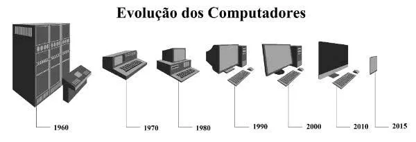

Resumo da evolução dos computadores
A evolução do computador é resultado da contribuição de diversos cientistas que têm participação na criação e reatribuição nas utilidades dessa máquina, tais como Alan Turing, Konrad Zuse, John Eckert e John Mauchly. O computador foi uma das principais invenções do século XX. As suas origens remetem à Segunda Guerra Mundial, mas os primórdios da tecnologia com os computadores data de séculos atrás.
- Primeira Geração (1940-1956): Utilizavam válvulas termiônicas, componentes grandes e que geravam muito calor, tornando os computadores lentos e volumosos. Exemplos: ENIAC, EDVAC.
- Segunda Geração (1956-1963): Substituição das válvulas por transistores, que eram menores, mais rápidos e consumiam menos energia. Exemplo: IBM 1401.
- Terceira Geração (1964-1975): Circuitos integrados (chips) permitiram a criação de computadores ainda menores e mais poderosos, abrindo caminho para os computadores pessoais.
- Quarta Geração (1971-presente): Microprocessadores, que integravam toda a unidade central de processamento (CPU) em um único chip, levando à popularização dos computadores pessoais (PCs). Exemplos: Intel 4004, Altair 8800, Apple II, IBM PC.
- Quinta Geração (em desenvolvimento): Foco em inteligência artificial, computação quântica e nanotecnologia, buscando computadores ainda mais poderosos e eficientes.